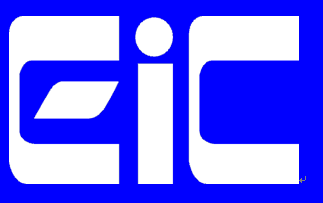
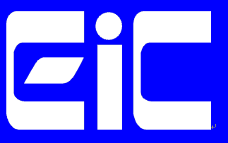
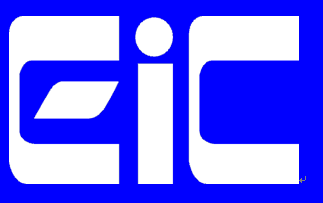
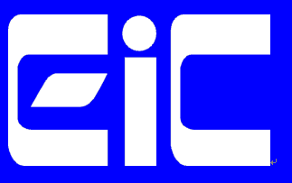

 

By conducting the Preliminary (Qualifying) Round, the following 16 teams have been selected for advancing to the World final among 147 Classroom registered teams and 36 submissions. By considering actual regional balance, 15 teams with the highest ratings among all teams and 1 international team with good results have been selected. Congratulations to all winners! See you in beautiful Tokyo!
Other teams that lost are invited to Banquet on the World final round date on a first-come, first-served basis; so come to Tokyo and watch the World final together! Later we will let you know in detail.
| Rank | Team Name | Points | Time | Selected for world final | |
|---|---|---|---|---|---|
| 1 | piyo | 60 | 3535.52 | Selected | |
| 2 | tortoise | 59 | 3868.17 | Selected | |
| 3 | nhho | 58 | 3505.43 | Selected | |
| 4 | kumikomiya | 58 | 3553.47 | Selected | |
| 5 | エーアイテイオウ | 54 | 4414.01 | Selected | |
| 6 | KPCC Kamoike Team | 53 | 3583.51 | Selected | |
| 7 | hirokazu1020 | 50 | 3539.93 | Selected | |
| 8 | kt_tenel | 48 | 3579.49 | Selected | |
| 9 | johnnyhibiki | 47 | 3566.91 | Selected | |
| 10 | nono | 46 | 3594.5 | Selected | |
| 11 | クレストボウズ | 45 | 3792.08 | Selected | |
| 12 | assy | 44 | 3597.53 | Selected | |
| 13 | sc-samurai | 44 | 3633.74 | Selected | |
| 14 | traP | 44 | 3706.33 | Selected | |
| 15 | BpkvT0FAkkQsXsc9 | 43 | 3923.68 | Selected | |
| 16 | Team Bits | 42 | 3779.2 | ||
| 17 | チーム森 | 40 | 3719.45 | ||
| 18 | Neptune | 40 | 3761.96 | ||
| 19 | iwatsushi | 39 | 3712.02 | ||
| 20 | Taiyo | 39 | 5175.29 | ||
| 21 | sumoru | 37 | 3923.05 | ||
| 22 | 楓信仰 | 36 | 3716.43 | ||
| 23 | goura32 | 36 | 3775.72 | ||
| 24 | DOG | 34 | 4173.28 | ||
| 25 | ThreeStones | 30 | 3962.34 | ||
| 26 | Sakuma Hiroki | 30 | 6041.42 | ||
| 27 | blank | 22 | 4925.35 | Selected | |
| 28 | KTH | 20 | 4850.93 | ||
| 29 | SouthNorth | 18 | 6659.42 | ||
| 30 | saida | 11 | 9554.2 | ||
| 31 | glycine | 8 | 10730.6 | ||
| 32 | tf-b0team | 6 | 16256 | ||
| 33 | raven | 6 | 16360 | ||
| 34 | はぐりん | 5 | 16360 | ||
| 35 | shimo | 4 | 16360 | ||
| 36 | いんげんだもの なしを | 4 | 16360 |